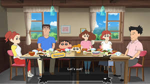
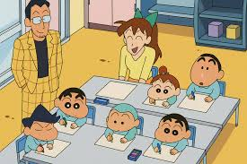

The Nohara family is from Crayon Shin-chan. They consist of the naughty boy Shinnosuke (Shin-chan), the loving but hot-tempered mother Misae, the hard-working father Hiroshi, the darling baby sister Himawari, and the clever dog Shiro. The family lives in Kasukabe, Japan, and there is never a dull moment in their lives filled with delightful chaos, touching moments, and laughter.

Family Vacation at the grand parents Home
Family Vacation
A holiday with family is an ideal opportunity to unwind, connect, and make memories together. Whether you're taking a seaside vacation, spending time at the mountains, or spending time in a new city, there is always fun to be had. There are plenty of activities that can help bring you closer together on vacation as a family like hiking, building sandcastles, or sampling local cuisines. The average family vacation can turn into the most memorable vacation if you road trip, play games, or just spend time together in a new space. Plus, there is always the sense of adventure when traveling with your family—unexpected moments that will make a great story later

Shinchan having fun at school
Shinchan school life
At school, Shin-chan is still as troublemaking and mischievous as ever! He goes to Futaba Kindergarten and is enrolled at the Sunflower Class. In class, he tends to make jokes, dances, and makes a fool of teachers and classmates instead of paying attention. His caring teacher, Miss Yoshinaga, tried hard to keep him in line, but it always becomes funny with Shin-chan fooling around. With his classmates, such as Kazama, Nene, Masao, and Bo, Shin-chan makes each school day into a hilarious time of fun, silliness, chaos and unexpected events.